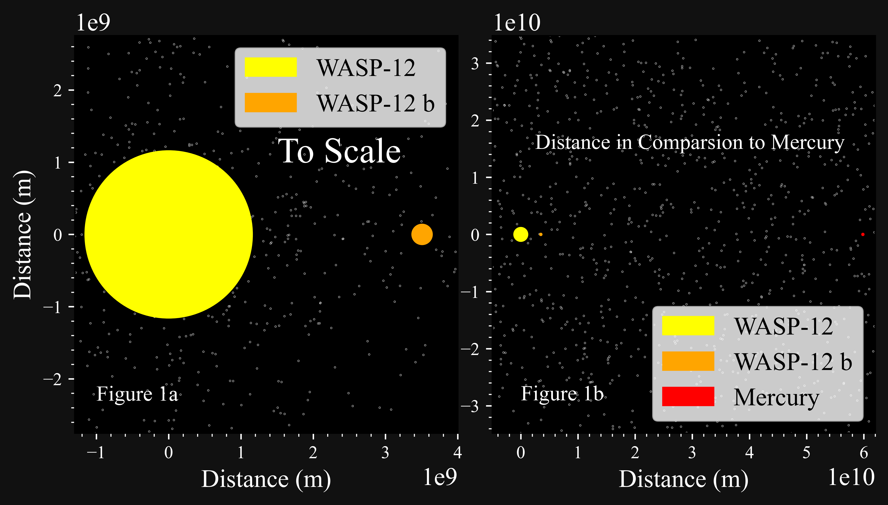

Under Prof. Alex Filippenko, Mentored by Kishore C. Patra

Supernovae and Hot Jupiters
Most of my time within the Filippenko Lab has been spent working on detecting tidal orbital decay in Hot Jupiter systems. As the name suggests, these exoplanets are roughly the mass of Jupiter and orbit their host stars with periods of approximately one day. Due to strong tidal forces, the planet is distorted from a spherical shape into an elongated, egg-like shape. There also exists a tidal bulge on the surface of the host star. However, this stellar bulge does not align perfectly with the planet and instead lags slightly behind. This lag has interesting consequences for the system.

Figure 1a: To-scale diagram of the WASP-12 system.
Figure 1b: Same as Figure 1a but with Mercury included. Note that Mercury would be smaller than 1 pixel on this scale.
Because there is a lag, the stellar bulge tugs back on the planet, causing it to lose angular momentum and transfer it back to the host star. The efficiency of this energy transfer is characterized by the tidal quality factor, \(Q_{\star}'\). This parameter measures how efficiently the star–planet system converts orbital energy into heat due to tidal interactions. Calculating \(Q_{\star}'\) from first principles is difficult, as it requires a detailed theory of tides, which remains poorly understood. Therefore, by providing observational evidence of systems undergoing tidal orbital decay, we can better understand what makes these systems unique and uncover the underlying physics driving this process.
In this study, we observed several Hot Jupiter systems: WASP-12 b, WASP-43 b, WASP-103 b, HAT-P-23 b, KELT-16 b, WD 1856+534 b (a white-dwarf system), and WTS-2 b. To date, WASP-12 b is the only confirmed system undergoing tidal orbital decay, though there have been hints of similar behavior in other systems. Our goal is to determine whether any of these additional systems display the same phenomenon. Using transit timing data, we were unable to conclusively detect orbital decay in any system other than WASP-12 b. Erring on the side of caution, our analysis suggests that WD 1856+534 b may instead be a case of orbital growth.
We also attempt to provide a new method for detecting orbital decay. Instead of relying solely on transit timing variations, we develop models applicable to radial-velocity (RV) data. In theory, this method would require less observational time compared to transit-based approaches. For a WASP-12–like system, orbital decay could be detected within approximately three years assuming an RV precision of about 1 m/s. However, current RV measurements and achievable precisions are not yet sufficient to detect orbital decay in any of the systems studied.
Scientific Products:
As promised, here is my poster presentation from the 2023 Koret UC LEADS Research & Leadership Symposium.